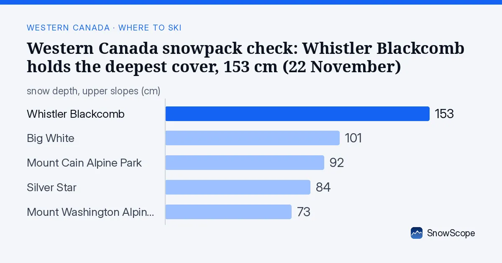

Western Canada snowpack check: Whistler Blackcomb holds the deepest cover, 153 cm (22 November)
The early-winter snowpack in Western Canada is building unevenly, and height makes all the difference. The snow map in Western Canada shows 398,620 km² of white ground today and snow at 52 of 57 resorts.
See the live snow forecast for Whistler Blackcomb in the SnowScope appSnow depth, powder alerts and the 3D map, free.
Depth today, by the numbers
Snow-covered area: 399,700 km² on 20 November, 398,620 km² today, 385,170 km² forecast for 25 November. The map is getting less white.
Three heights at Whistler Blackcomb, three numbers: 114 cm at the top (2,259 m), 51 cm at mid-mountain (1,456 m), 4 cm at the base (653 m).
| Resort | Snow depth | New snow, 72 h | Coming, next days | Top |
|---|---|---|---|---|
| Whistler Blackcomb | 153 cm | 5 cm | 101 cm | 2,259 m |
| Big White | 101 cm | 1 cm | 2 cm | 2,271 m |
| Mount Cain Alpine Park | 92 cm | 2 cm | 132 cm | 1,616 m |
| Silver Star | 84 cm | 0 cm | 1 cm | 1,886 m |
| Mount Washington Alpine Resort | 73 cm | 9 cm | 121 cm | 1,569 m |

Far ahead of the rest
Whistler Blackcomb has 153 cm on its upper slopes, well ahead of Big White with 101 cm.
At about 1,456 m, Whistler Blackcomb has 40 cm today; a normal 22 November has 124 cm there.
That is more than in 0 of the 46 past winters on this date.
In past winters the best snow at Whistler Blackcomb usually came mid-March / late March.
Day by day at Whistler Blackcomb: Sunday 22 November 5 cm; Monday 23 November 8 cm; Tuesday 24 November 40 cm; Wednesday 25 November 53 cm.
Height by height at Whistler Blackcomb: 653 m 4 cm on the ground, 11 cm more in the next 7 days; 1,456 m 51 cm on the ground, 96 cm more in the next 7 days; 2,259 m 114 cm on the ground, 116 cm more in the next 7 days.
Ground truth
How sure are we? Resort values are estimates for the upper slopes; stations are measurements, each at one point on the date shown.
Versus past winters
Below par at Whistler Blackcomb: 40 cm at 1,456 m against a usual 124 cm, and only 0 of the past 46 winters had less on 22 November.
Big White, 1,891 m: 53 cm, close to normal (usual: 44 cm); deeper than in 26 of the past 46 winters.
Mount Cain Alpine Park, 1,403 m: 34 cm today, usual 59 cm. Late. Only 15 of the past 46 winters had less snow on 22 November.
Coming up
Next round by 25 November: 132 cm at Mount Cain Alpine Park, 121 cm at Mount Washington Alpine Resort and 101 cm at Whistler Blackcomb, according to our forecast.
The freezing level at Whistler Blackcomb reaches 1,170 m to 1,490 m on 24 November, cutting the resort in two: wet snow below, wintry above.
Forecasts a few days ahead can change: look at the map again the day before you travel.
Tips for skiers
- Snow on the map does not mean a resort is open: check lifts and opening dates on the resort's website.
- Early-season snow is thin. Stay on open, groomed pistes: rocks and grass can hide just under the surface.
- A rule of thumb that is rarely wrong: high and north-facing keeps snow, south-facing loses it first.
- Before you ski off-piste or go touring, read the official avalanche bulletin (links below).
- Get a powder alert in the SnowScope app to know when Whistler Blackcomb gets fresh snow.
About these numbers
Resort snow depths are the deepest snow on the resort's upper slopes on the date shown; they are estimates for an area, not a measurement at one point. Forecasts can change. Always read the official avalanche bulletin before going off-piste.
Official avalanche bulletins: Avalanche Canada
Cite this report
For research, teaching or the press: the numbers and charts are free to reuse under CC BY 4.0 with this citation.
SnowScope (2026), Western Canada snowpack check: Whistler Blackcomb holds the deepest cover, 153 cm (22 November), https://snowscope.app/blog/en/2026/11/western-canada-whistler-blackcomb-snow-depth-today-22-november-2026.html, accessed 2026-11-22
SnowScope (Atlas Labs). (2026, November 22). Western Canada snowpack check: Whistler Blackcomb holds the deepest cover, 153 cm (22 November). SnowScope snow reports. https://snowscope.app/blog/en/2026/11/western-canada-whistler-blackcomb-snow-depth-today-22-november-2026.html
BibTeX
@misc{snowscope2026westerncanadawhistlerbla,
author = {{SnowScope (Atlas Labs)}},
title = {Western Canada snowpack check: Whistler Blackcomb holds the deepest cover, 153 cm (22 November)},
year = {2026},
month = nov,
howpublished = {\url{https://snowscope.app/blog/en/2026/11/western-canada-whistler-blackcomb-snow-depth-today-22-november-2026.html}},
note = {Published 2026-11-23 09:01 UTC; accessed 2026-11-22}
}· CC BY 4.0 · Methods, data and tools →
Whistler Blackcomb: snow and temperature by height, this winter vs last (tools) →
Follow Whistler Blackcomb
Free: a message when fresh snow is coming, and the forecast every morning.
More snow reports

Snow-covered area: 258,160 km² on 13 November, 253,880 km² today, 298,900 km² forecast for 18 November. The map is getting less white. Three inputs, …

Whistler Blackcomb forecast to gain 47 centimetres by Saturday as snow arrives Thursday through the region, according to our model run on 4 November.

At Big White on 15 November, the upper slopes hold 68 cm near the summit while the base remains bare; an extreme vertical gradient typical of early season.